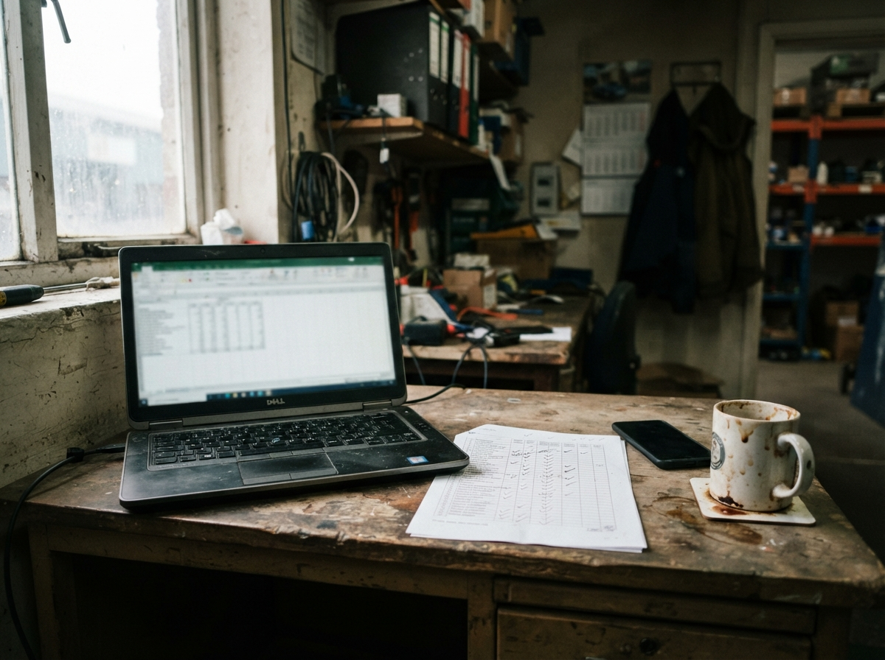
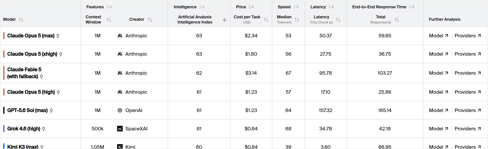
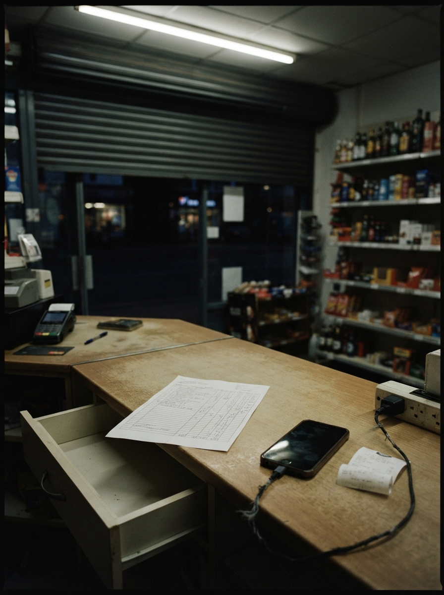

Carta del editor · Humano
Cerré X y abrí la hoja
El modelo nuevo no arregla la fila que sigue vacía.
Hola.
En X vi otro hilo de un modelo nuevo. Lo cerré. No porque no importe: porque el lunes mío no vive en el anuncio. Vive en una hoja que ya tenía abierta, con la misma columna de siempre.
El jueves Google sentó a Gemini encima de Sheets. Mini-apps, tableros, sin código. El anuncio es de la hoja. El cambio, si te toca, es otro: si el lead no bajó a una fila, el canvas no tiene nada que pintar.
Este número es eso. La señal, los casos, las tres reglas. Al final, el tablero: el ranking no se movió. Lo que se movió es dónde se sentó el modelo.
Phil
Phil · agosto 2026 · Wavys Technologies · wavys-technologies.com
Señal · 13 ago 2026 · Google · Microsoft
Se sentó en la hoja

Google sacó Sheets canvas. Gemini, con un prompt, convierte la hoja en una mini-app: tablero, tracker, lo que pidas. Sin código. La capa lee y escribe la misma grilla. El anuncio es de Sheets. El cambio, si te toca, es que el modelo se sentó encima de la hoja que ya abres.
Sale en inglés, para Google AI Pro y Ultra, y para Workspace Business y Enterprise. Si tu operación vive en un Excel local y en el chat, el canvas no tiene fila que pintar. Se quedó en otra casa.
una sola app y recortan
TechCrunch · Microsoft · 13 ago 2026 · Copilot
Microsoft junta el Copilot de casa y el de la oficina en una sola app. El 18 de agosto le quitan al consumidor los group chats, los podcasts de IA, Labs y Deep Research. Dicen que quieren una experiencia más simple.
Yo no me quedé en el icono nuevo. Me quedé en lo que cortan. Dos años de “shift generacional” y ahora admiten que el producto se había ido de las manos. El modelo no era el problema. Era tener dos casas y ninguna operación.
blog.google/products-and-platforms/products/workspace/sheets-canvas-for-google-sheets-spreadsheets/
techcrunch.com/2026/08/13/microsoft-kills-off-unsuccessful-ai-features-while-merging-its-separate-copilot-apps/
Tema central · Sheets · Excel · la fila
sigue la fila
El modelo nuevo pinta tableros encima de la hoja. Si la fila no existe, pinta aire.
Hasta ahora la hoja era “el sistema” en la práctica.
La fila es el sistema

- Fuente
- Google · Sheets canvas, mini-apps con Gemini encima de la hoja. blog.google/products-and-platforms/products/workspace/sheets-canvas-for-google-sheets-spreadsheets/
- Anuncio
- 13 ago 2026Gemini pinta tableros encima de la grilla.
- Idioma
- Hoy, solo en inglés. Pro, Ultra, Workspace Business y Enterprise.
- Scheduled
- El resto de dominios empieza el 31 de agosto. Sin precio en soles acá.
Sheets canvas es una capa que lee y escribe la misma grilla. Cambias el tablero, cambia la hoja. Cambias la hoja, cambia el tablero. Eso es real. Lo publicó Google el 13 de agosto.
No lo leí como “ya no necesitas un sistema”. Lo leí así: el modelo se sentó donde ya había filas. Si el lead se quedó en Maps, si el hueco de la agenda no se escribió, el canvas no inventa el lunes.
El N°1 era el chat que deja de ser gratis. Este número es la hoja que sigue siendo el sistema — con o sin Gemini encima.
Lo que se rompe no es Excel. Es la costumbre de trabajar sin bajar el lead a una fila.
Cuatro casos
Cuatro negocios distintos. Una sola pregunta: ¿el lead bajó a una fila, o se quedó en el aire?
01 · Maps · la ruta
“Paso mañana”
El pin marca un lugar. El lead es una fila. Si el nombre se queda en la ruta y no baja a la hoja, el viernes no hay a quién escribirle. El canvas de Google no va a inventar esa celda. El lead se pierde en el trayecto, no en el modelo.
02 · Ficha · el chat
“Si no está, no existe”
El chat puede estar lleno y la hoja, en blanco. Lo que no escribiste no pasó. El modelo nuevo no te arma la ficha si nadie anotó nombre, pedido y estado. La fila lo confirma. El chat lo niega.
03 · Agenda · el hueco
“¿Tienen hora?”
Un espacio en blanco en la semana. No es “falta de IA”. Es una llamada que no se agendó. El hueco se ve. El modelo no lo llena si la agenda no es una fila que el chat pueda leer.
04 · Grupo · el equipo
Tres anotando
Tres personas escribiendo el mismo lead en tres sitios. Saca la atención al cliente del grupo. Una puerta, un hilo, una fila.

Tema central · la cita y los datos
El arreglo no es un canvas más lindo. Es que el chat, la fila y el estado hablen.
Phil · sobre Sheets canvas
Los datos que sí existen
Solo lo que Google y Microsoft publicaron esta semana. Nada de precios en soles, nada de filas inventadas.
- Sheets canvas
- 13 ago 2026Gemini convierte la hoja en mini-app. Lee y escribe la misma grilla. Hoy, en inglés.
- Copilot recorta
- 18 ago 2026Microsoft junta las dos apps. Al consumidor le quitan group chats, podcasts, Labs y Deep Research.
- Scheduled
- 31 ago 2026Sheets canvas llega a dominios Scheduled. Hasta entonces, no está en tu hoja si no eres Rapid Release.
Sin precio en soles en esta página. El canvas no crea la fila: la pinta si ya existe.
blog.google/products-and-platforms/products/workspace/sheets-canvas-for-google-sheets-spreadsheets/
techcrunch.com/2026/08/13/microsoft-kills-off-unsuccessful-ai-features-while-merging-its-separate-copilot-apps/
Antes de pintar el canvas
Tres reglas
No es una lista de buenas intenciones. Es lo que yo dejaría escrito en la operación antes de sentar un modelo encima de la hoja.
01
Si no bajó a una fila, no pasó.
El pin de Maps, el “paso mañana”, el hueco de la agenda: si no está en la hoja, no existe. El canvas no inventa celdas. Anótalo o escálalo.
02
Una puerta, un hilo, una fila.
Tres personas anotando el mismo lead en tres sitios es ruido. El chat escribe. La hoja confirma. Nadie más.
03
Lo que mueve plata o una cita, lo ve una persona.
El sistema prepara: junta los datos, arma la fila, deja el estado listo. No cierra solo. Quien cobra o agenda es alguien de tu equipo. El modelo no firma.
Si esto queda escrito, el modelo nuevo no te cambia el mes: te cambia una costumbre. La fila, no el anuncio.
— Phil
Más noticias · 12–14 ago 2026 · OpenAI · Word · 1 oct
Más noticias
05a · OpenAI · Wharton · 12 ago 2026
los juniors
Un paper de OpenAI, Columbia y Wharton miró 17 millones de mensajes de ChatGPT Enterprise en 1.764 empresas. Quien más lo usa no es el jefe. Son los juniors.
Lo leí así: el modelo entra por quien escribe la fila, no por quien firma el contrato.
05b · Microsoft · Word · ago 2026
elige el modelo
Copilot en Word ahora deja elegir Claude al lado de OpenAI. El documento decide, no el laboratorio.
Es la misma apuesta que veo en la hoja: el valor no está en un modelo único, está en entrar donde ya se escribe.
05c · N°1 · recordatorio · 1 oct
el chat cuesta
El 1 de octubre las respuestas de WhatsApp que no son plantilla vuelven a la cuenta.
Este número no lo vuelve a contar. Lo deja puesto: la hoja y el chat se pagan juntos si no hablan.
techtimes.com/articles/324500/20260814/junior-workers-drive-chatgpt-enterprise-study-maps-17m-messages-across-firms.htm
techbooky.com/microsoft-word-copilot-anthropic-models-openai/
developers.facebook.com/documentation/business-messaging/whatsapp/pricing/non-template-messages
Tablero de IA · índice y gráficos
Tablero de IA
Artificial Analysis Intelligence Index. Captura del 14 ago 2026 · artificialanalysis.ai
Índice de inteligencia · Benchmark AA · 14 ago 2026
Índice de terceros, no de Wavys. Captura del 14 ago 2026 — la semana no lo movió. Gemini 3.7 Flash no tiene puesto acá: aparece en los gráficos de costo. La noticia es la hoja.



Contratapa · nos leemos el viernes
Mira tu hoja antes del canvas

Si esto te sirve para mirar tu fila antes de sentar un modelo encima, bien. Si quieres ver cómo se ve un sistema que vive en el chat y en la hoja, nos escribes y lo vemos en 30 minutos.
30 minutos, una llamada
https://cal.com/wavys-call/30min
Nos escribes, miramos tu chat y tu hoja, y sales con las tres reglas escritas.
Nos leemos el viernes que viene.